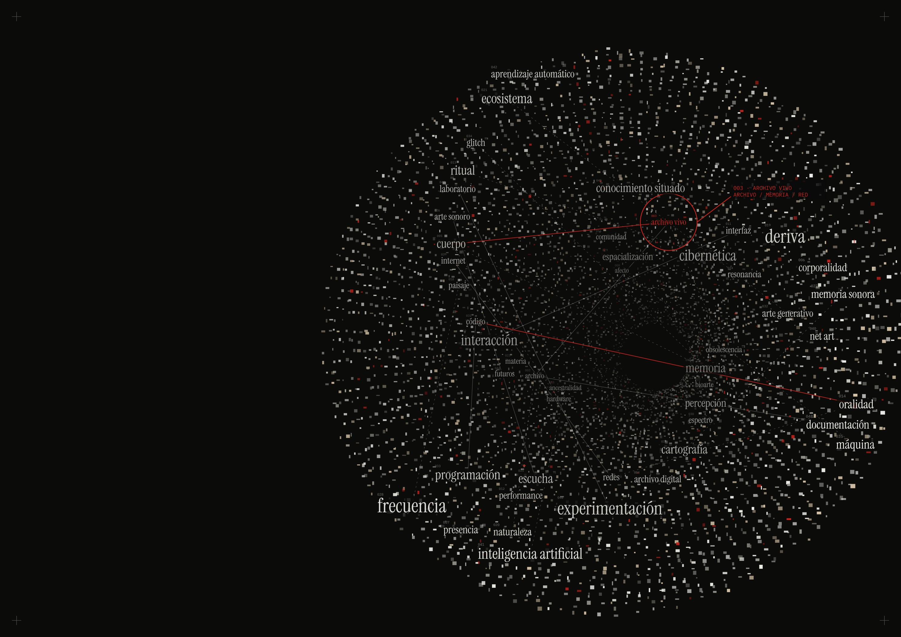
Anexo · Propuesta artística
Visualización de datos y creación curatorial. Obra audiovisual e interactiva sobre la base de artistas de Plataforma Arte y Medios.
01 · Obra y archivo
Obra audiovisual interactiva en formato web que trabaja con la base de artistas de Plataforma Arte y Medios (PAM): artistas, colectivos y obras del cruce entre arte, ciencia y tecnología, con sus técnicas, temas, cronologías y territorios.
El público cambia criterios, da peso a intereses y recorre conexiones. Cada decisión reorganiza la imagen y el sonido del conjunto y deja ver que la lectura del archivo depende del criterio con que se ordena.
El mockup que acompaña este anexo es una prueba conceptual. Sus datos de entrada son los 48 conceptos del Glosario Medial. En la obra, esos nodos pasarán a ser perfiles de artistas, colectivos y obras del catálogo de PAM.
Versión web del mockup
editor.p5js.org/sebastianmancillah/full/0gzrvNW9W
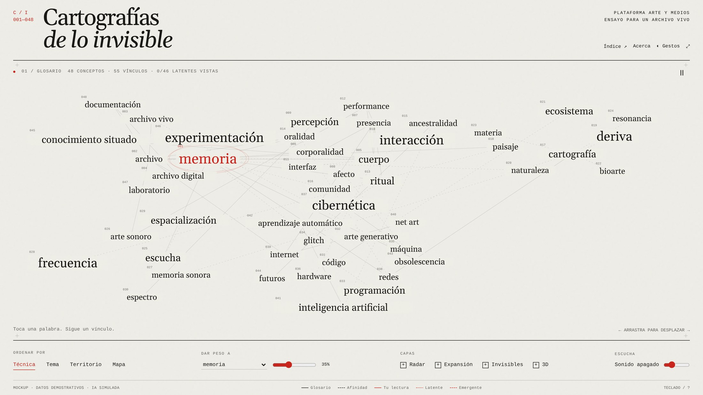
Mockup v1.4, vista general. Datos de entrada: 48 conceptos del Glosario Medial, con 55 vínculos y 46 relaciones latentes. Todavía no incluye registros del catálogo de PAM.
La obra distingue tres niveles de relación. El mockup agrega dos variantes.
Documentada. Vínculo respaldado por el catálogo o por una fuente.
Propuesta. Afinidad calculada por reglas o algoritmos. Debe contrastarse.
Interpretada. Conexión que traza una persona durante la visita.
Latente ∴. Afinidad poco probable entre registros de categorías distintas.
Emergente ⇄. Relación que se crea por el uso repetido del público.
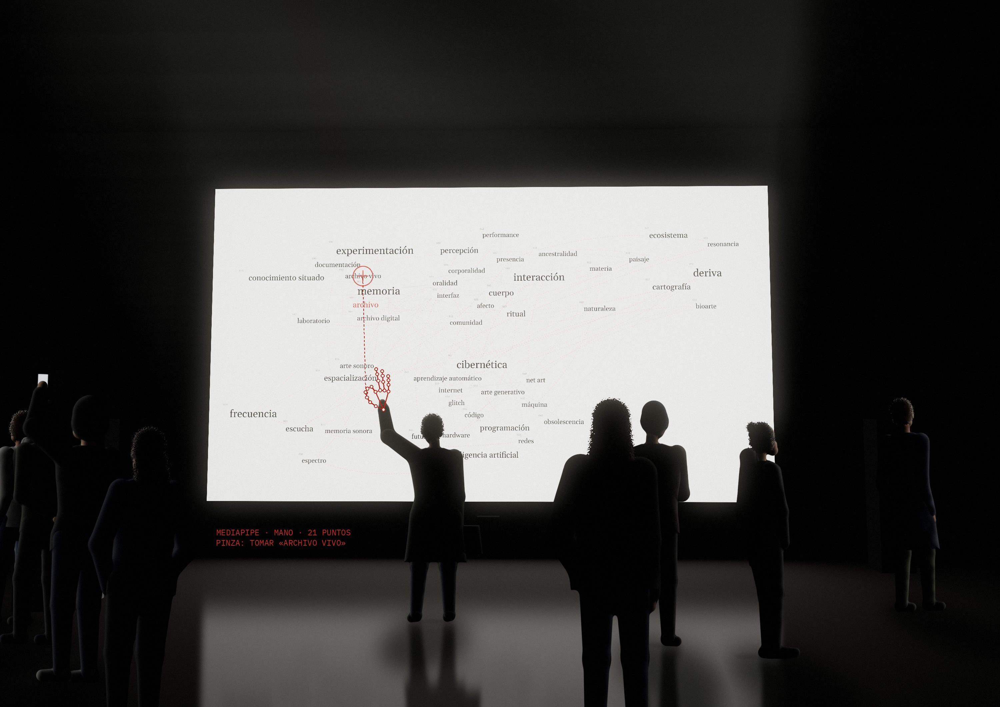
02 · Exhibición
La obra se presenta en proyección o pantalla grande, con audio estéreo, y funciona sin conexión a internet. Se recorre con ratón, pantalla táctil o teclado. Con una cámara se suma el gesto: la pinza sobre un nombre lo selecciona y abre su ficha, y la mano abierta desplaza el conjunto. El sonido corresponde al elemento seleccionado.
Simulación de montaje · proyección de 6,4 × 3,6 m · figuras a escala
En pantalla, el mockup en modo proyección con la capa «Invisibles»
03 · Vistas del prototipo
Las seis vistas usan los mismos 48 conceptos y cada una los ordena con otro criterio. Cambia qué elementos quedan cerca, cuáles se destacan y cuáles suenan. En la obra se aplicarán a los perfiles de artistas.
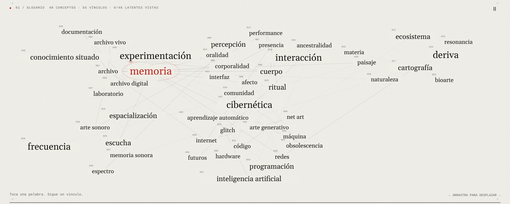
Ordena por técnica, tema o territorio. Cada criterio agrupa los elementos de otra manera.
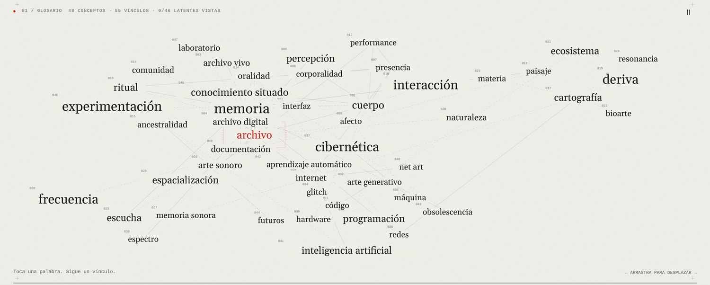
El interés que elige el público atrae hacia el centro los elementos relacionados.
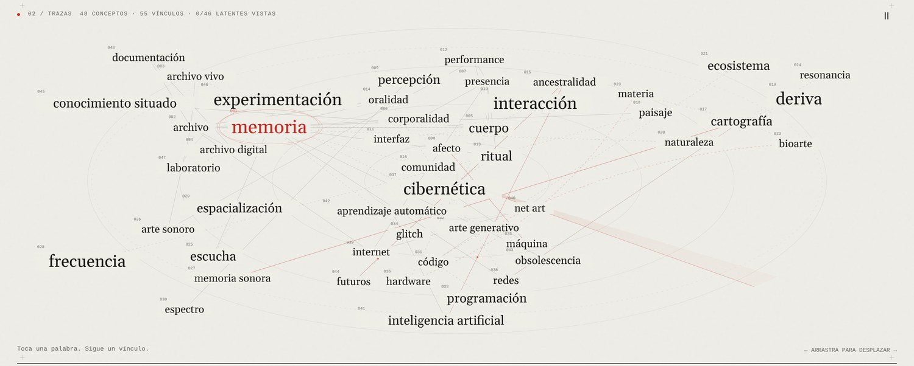
Un barrido recorre los vínculos en el tiempo, los hace sonar y revela relaciones latentes.
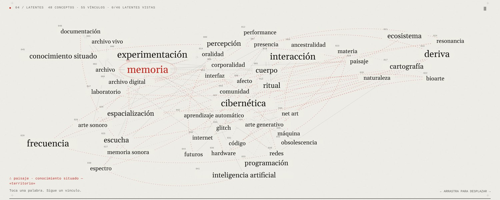
Muestra afinidades poco probables entre elementos de técnica, tema y territorio distintos.
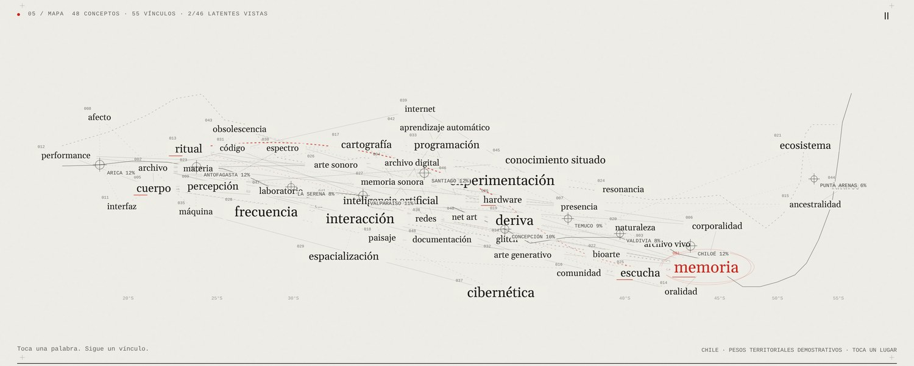
Chile como cartograma. Cada territorio se alarga según cuánto se menciona y cuánta atención recibe.
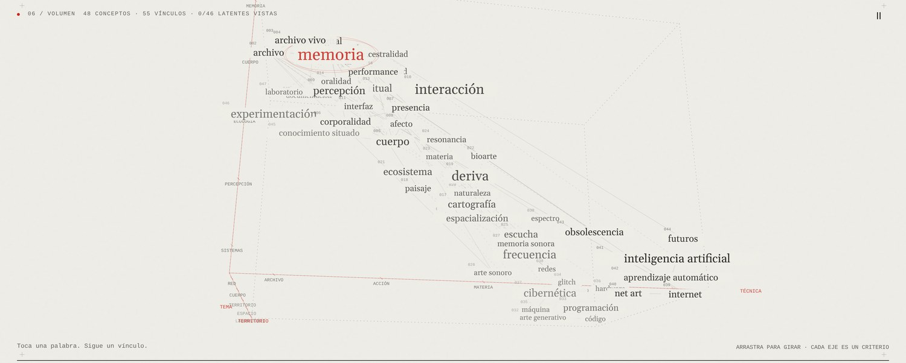
Técnica, tema y territorio como tres ejes. Cada elemento se ubica en el cruce de sus categorías.
04 · Hallazgos
Observaciones hechas con el mockup sobre datos demostrativos. Cada una muestra información que no aparece al leer las fichas por separado e indica qué se buscará en los perfiles de PAM.
ritual
TÉCNICA · acción
cuerpo · corporalidad · presencia · afecto · percepción · interacción · interfaz · performance · oralidad · ancestralidad · comunidad
TEMA · memoria
memoria · archivo · archivo vivo · archivo digital · oralidad · ancestralidad · comunidad · conocimiento situado · experimentación · laboratorio · documentación
TERRITORIO · territorio
oralidad · ancestralidad · comunidad · cartografía · paisaje · deriva · naturaleza · ecosistema · bioarte · materia · resonancia
1
En su ficha, «ritual» tiene tres etiquetas. En pantalla, cada criterio lo ubica junto a once conceptos distintos: con cuerpo y performance por técnica, con archivo y documentación por tema, y con paisaje y deriva por territorio.
Con los perfiles pasará lo mismo. Los vecinos de un artista cambian si se ordena por herramienta, por tema o por territorio, y la obra muestra cuál criterio está activo.
2
Con el sonido activo, el elemento seleccionado suena según sus relaciones. «Memoria», con 13 vínculos, suena agudo y rápido. 24 de los 48 conceptos tienen un solo vínculo y suenan graves y lentos.
Los vínculos se concentran en archivo y cuerpo; sonido, materia y código promedian menos de dos. En un catálogo de artistas, pocos vínculos pueden indicar falta de documentación y no menor relevancia.
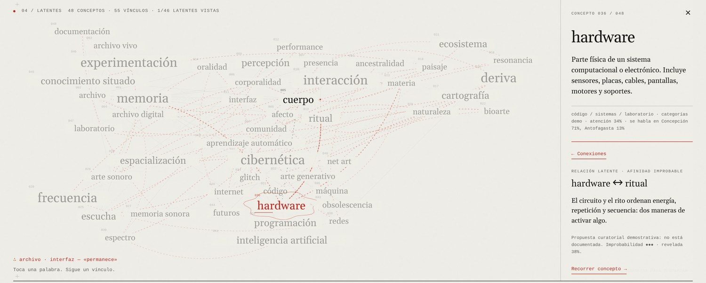
3
La capa Invisibles propone 46 relaciones entre conceptos que no comparten técnica, tema ni territorio. 40 surgen de palabras poco frecuentes presentes en ambas definiciones y 6 son ejemplos curatoriales.
En PAM, el mismo procedimiento podrá acercar una obra hecha con circuitos y microcontroladores a una pintura que representa circuitos. Son hipótesis que se contrastarán con las obras y las fuentes.
4
En 3D, cada concepto ocupa el cruce de su técnica, su tema y su territorio. De 125 cruces posibles hay 8 ocupados, porque las tres clasificaciones de prueba casi coinciden.
Esa redundancia no se ve en una tabla. Por eso el diagnóstico del catálogo separará herramientas, lenguajes, temas, materiales y motivos representados.
NORTE → SUR · PESOS DEMOSTRATIVOS, SIN ATENCIÓN DEL PÚBLICO
5
Mapa dibuja Chile como cartograma. Cada lugar se alarga según cuánto se menciona y según la atención que reciben sus conceptos. Con pesos demostrativos, Santiago, Antofagasta y Chiloé tienen cerca de 12 % cada uno y Punta Arenas 6 %.
Un territorio con poco peso indica un vacío documental y no ausencia de actividad artística.
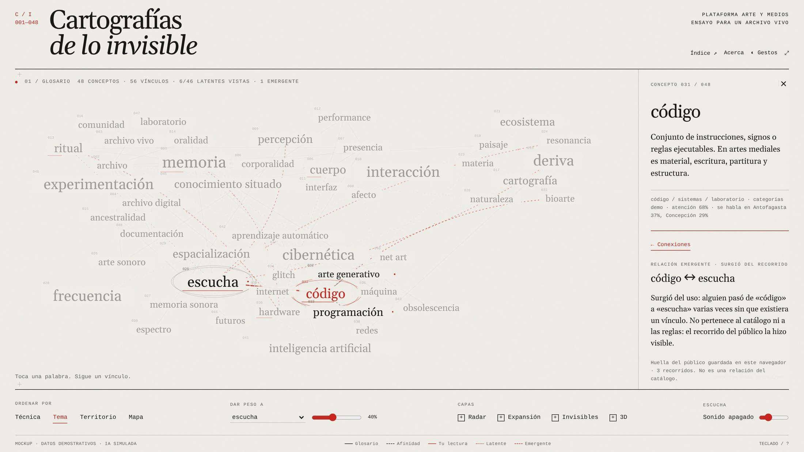
6
Si alguien pasa dos veces entre dos conceptos sin vínculo, se crea una relación emergente (⇄), aquí entre «escucha» y «código». No proviene del catálogo ni de las reglas.
La atención baja a la mitad cada 4 minutos y lo revelado cada 40. Estas relaciones se registran aparte de las documentadas.
En el mockup
En la obra
Nodo
Concepto del glosario (48)
Perfil de artista, colectivo u obra (59 entradas iniciales y al menos 12 por incorporar)
Ficha
Definición del Glosario Medial
Texto autorizado del catálogo, con su fuente y estado de validación
Categorías
Técnica, tema y territorio de prueba
Herramientas, lenguajes, temas, materiales y motivos; territorio de origen, residencia, producción o exhibición
Documentada
La definición de un concepto nombra a otro
Relación registrada en el catálogo, como integrantes de un colectivo u obras exhibidas juntas
Propuesta y latente
Reglas locales sobre palabras compartidas
Algoritmos de afinidad y búsqueda semántica con IA, marcados como sugerencia
Interpretada
Lectura del público y relaciones emergentes
Interpretaciones de participantes, registradas aparte y revisadas en el laboratorio
Vacíos
Pesos territoriales simulados
Datos ausentes señalados como tales, sin completarlos por inferencia
05 · Estudios
Cuatro estudios en p5.js, hechos para este anexo con 59 perfiles ficticios de artistas y colectivos, la misma cantidad de entradas del corpus de partida de PAM. Prueban las cuatro operaciones del proyecto y servirán de base para el laboratorio.
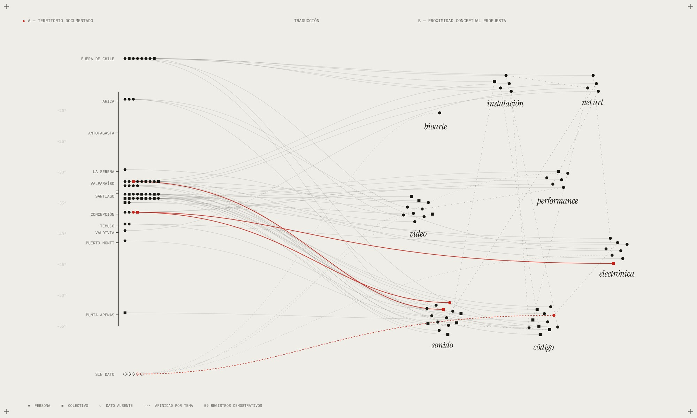
Compara dos lecturas de los mismos perfiles: el territorio documentado y una proximidad conceptual propuesta. Las curvas unen ambas posiciones para que la cercanía visual no se lea como cercanía geográfica.
posición ← territorio / afinidad · ○ dato ausente
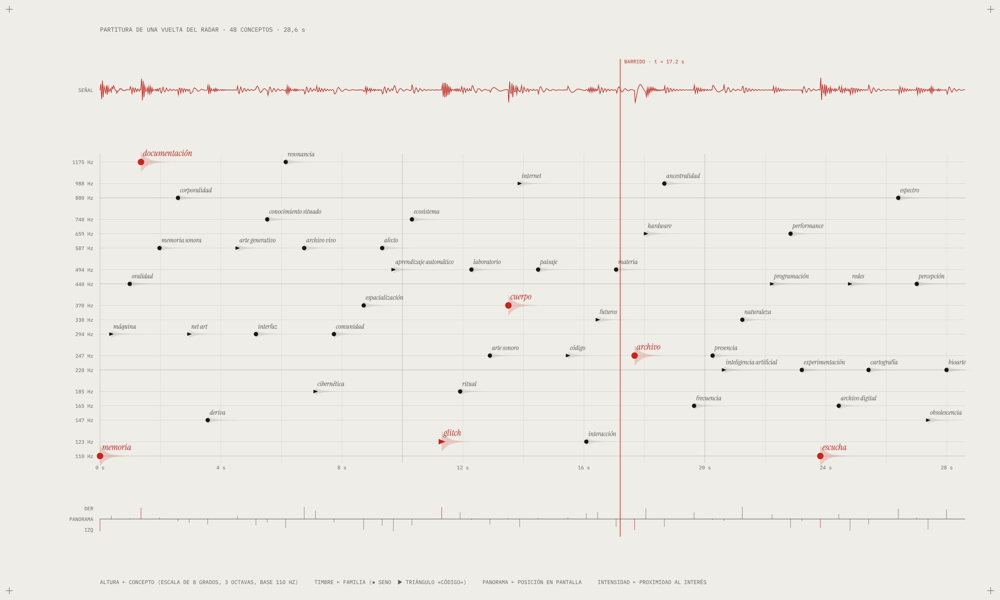
Partitura de una vuelta del radar. Cada elemento suena cuando el barrido lo alcanza, de modo que el recorrido se puede seguir sin mirar la pantalla.
altura ← elemento · timbre ← familia · panorama ← posición · intensidad ← interés
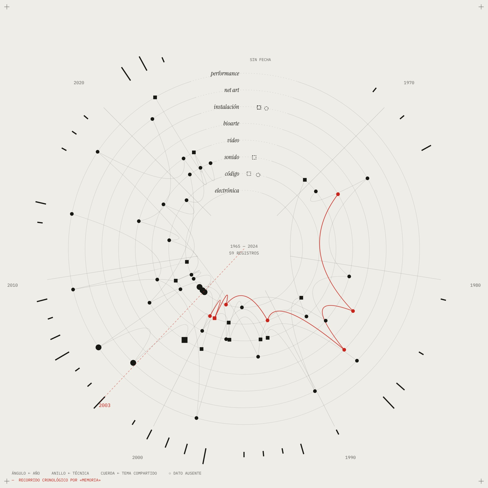
El ángulo indica el año y cada anillo una técnica. Los perfiles sin fecha se dibujan vacíos, en un sector propio.
ángulo ← año · anillo ← técnica · cuerda ← tema
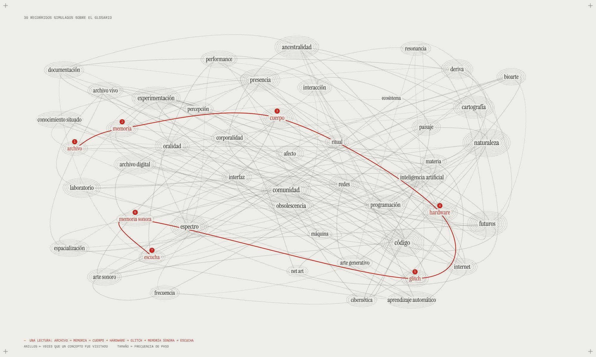
Superpone los recorridos de muchos visitantes sobre el glosario. En rojo, un recorrido con sus pasos numerados.
grosor ← frecuencia de paso · anillos ← visitas
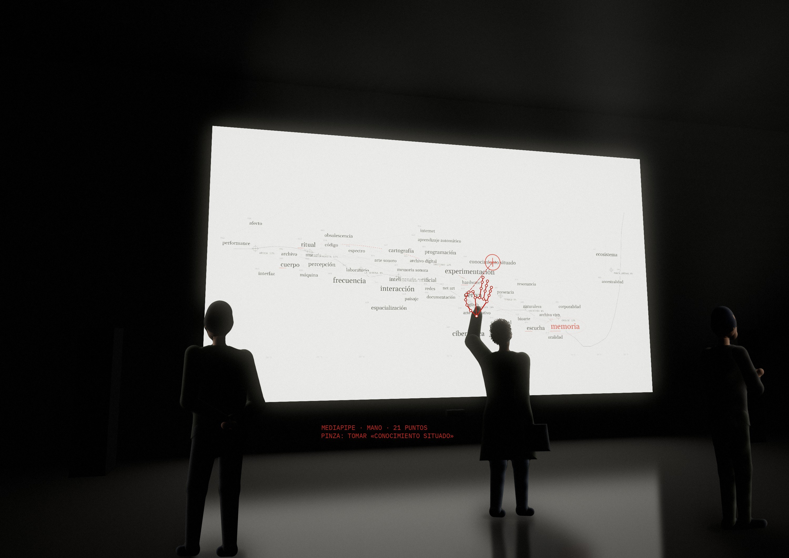
06 · Tecnologías
En el proyecto
Los conceptos se reemplazarán por perfiles del catálogo de PAM normalizado (59 entradas y al menos 12 por incorporar), con fuentes y estados de validación. Se evaluarán búsqueda semántica con IA sobre textos autorizados, YOLO para etiquetas visuales revisables y realidad aumentada en sala, según los resultados de los prototipos.
El espacio aporta proyector o pantalla grande y audio estéreo. El proyecto aporta computador, cámara web y periféricos.
Desarrollos previos en p5.js
Simulación · gesto de pinza sobre la vista Mapa
07 · Referencias visuales
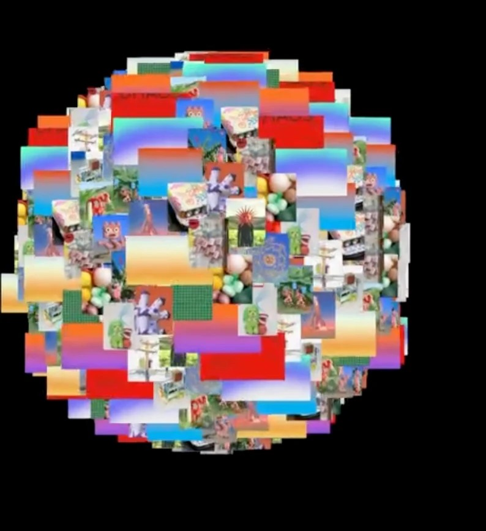
Las imágenes forman una esfera. El conjunto se percibe antes que cada pieza.
instagram.com/p/DXTNiy9DhgG
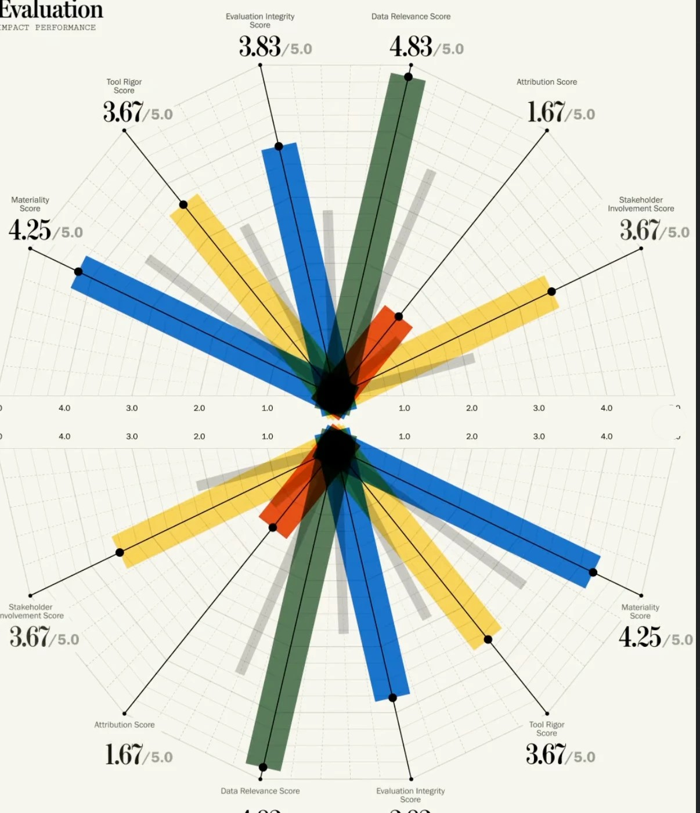
Los mismos puntajes en un gráfico radial duplicado y reflejado, con escalas y cifras legibles.
instagram.com/p/DJ6p2IiNtpg
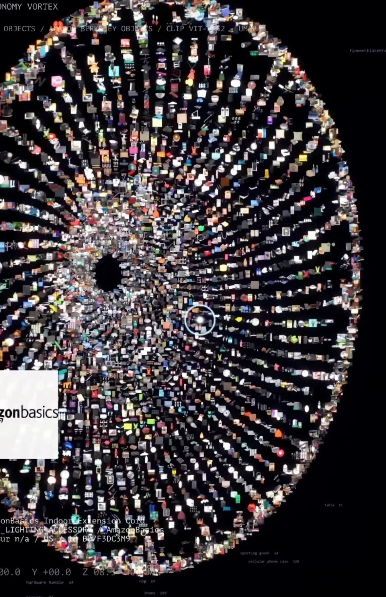
Particularmente atingenteObjetos ordenados por semejanza visual con CLIP y UMAP. La proximidad la calcula un modelo y no responde a una categoría. Se relaciona con la capa Invisibles y con la búsqueda semántica del proyecto.
instagram.com/p/Dc8V99ps_SH
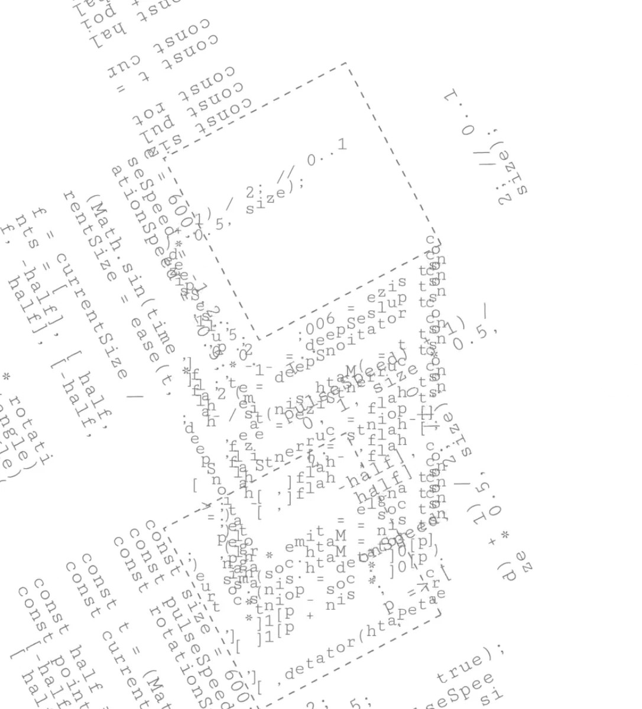
AtingenteEl código que genera la figura gira junto con ella. Las reglas que producen la imagen quedan a la vista.
instagram.com/p/DZahCr3jFab
Referencias reunidas por el equipo. Autoría y créditos por confirmar.
08 · Referentes
Aby Warburg · 1924–1929
Paneles de imágenes relacionadas por afinidad y no por cronología. Antecedente de la lectura de un archivo como constelación.
Refik Anadol · 2017
Recorrido con aprendizaje automático por 1,7 millones de documentos del archivo SALT, en Estambul, en una sala inmersiva.
Diagne, Barradeau, Doury · 2018
Obras de Google Arts & Culture dispuestas según una semejanza visual calculada.
Chile · 1971–1973
Sala de operaciones para visualizar en tiempo real datos de la economía del país. Antecedente chileno de cibernética y visualización.
Iconoclasistas · 2013
Metodología de cartografía crítica y participativa desarrollada en América Latina.
Subirós y De Vicente · 2014
Exposición del CCCB sobre la datificación, que también se presentó en Santiago. La visualización como experiencia pública y crítica.
Mark Hansen y Ben Rubin · 2001–2002
Texto de miles de salas de chat convertido en voz, sonido y luz en tiempo real.
Ryoji Ikeda · 2006–
Datos convertidos en material audiovisual a escala de sala.
NASA Chandra · SYSTEM Sounds · 2020–
Sonificación de datos astronómicos, diseñada también para personas ciegas o con baja visión.
Charles Joseph Minard · 1869
Tiempo, espacio, temperatura y pérdidas de un ejército en un solo gráfico.
W. E. B. Du Bois · 1900
Gráficos sobre la población afroamericana para la Exposición de París.
Giorgia Lupi y Stefanie Posavec · 2014–2015
Datos cotidianos registrados durante un año en postales dibujadas a mano.
Lev Manovich, The Language of New Media (2001) y Cultural Analytics · Nicolas Bourriaud, Esthétique relationnelle (1998) · Donna Haraway, «Situated Knowledges» (1988) · Mitchell Whitelaw, «Generous Interfaces for Digital Cultural Collections» (2015) · Brian Mackern, netart latino database (registro del net.art latinoamericano, 2000–2005).
09 · Proceso
MES 1–2
Diagnóstico del catálogo y acuerdos sobre permisos, preguntas, categorías y fuentes.
MES 2–5
Jornadas formativas, normalización de la información y primeros prototipos audiovisuales.
MES 5–8
Implementación e integración de espacialización, sonificación y composición generativa.
MES 8–9
Laboratorio curatorial y pruebas con participantes con distintas necesidades de acceso.
MES 9–10
Montaje, exhibición, transferencia y memoria.
Valentina Montero. Responsable del proyecto (ad honorem); criterios curatoriales y documentales de PAM.
Dirección Artística y de Interacción. Supervisa y coordina el desarrollo: lenguaje audiovisual, interacción e integración de la obra.
Darío Fernando Rojas Díaz. Mentor y supervisor de los estudiantes de Ingeniería; revisión técnica de los prototipos.
Dos estudiantes de Arte. Gestión, ampliación y homologación del archivo; propuestas de visualización y cruces. Dos estudiantes de Ingeniería. Estructuras interactivas y algorítmicas, integración de datos y montaje web.
Proyector o pantalla grande con audio estéreo en un espacio profesional por confirmar, y una demostración abierta en la Universidad Finis Terrae. Dos jornadas formativas y un laboratorio interdisciplinario. La mediación explicará los criterios que generan cada conexión.
Mockup en línea
editor.p5js.org/sebastianmancillah/full/0gzrvNW9W
Imágenes: capturas del mockup v1.4, estudios en p5.js y simulaciones de sala hechos para este anexo · Datos demostrativos